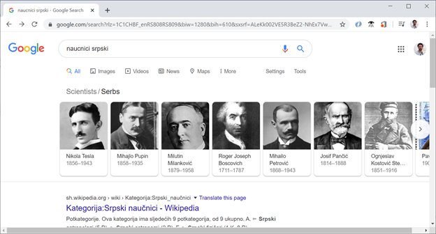
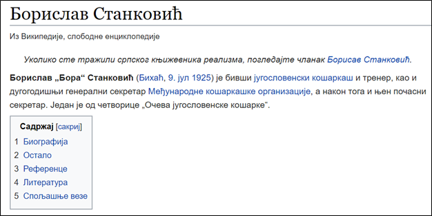
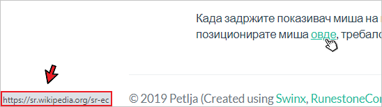

Повезивање докумената¶
У обичном тексту у књигама и Word документима прелазите са стране на страну и читате га редом (секвенцијално). На веб странама имате могућност да током читања лако прелазите на друге делове текста у зависности од интереса, вратите се назад и наставите током који вас највише занима.
Једна од најбитнијих идеја језика HTML је да омогући тзв. хипер-текст – текст који може да се чита различитим редом, зависно од интересовања читаоца.
Хипер-текст је толико битан елемент језика HTML, да је постао и део самог назива језика - “Hyper-Text Markup Language”. HTML документи вам омогућавају да поделите садржај на више фајлова, како би читалац могао да пролази кроз садржаје који га интересују на начин који му одговара. На овај начин, HTML документи постају много више од обичних страна које можете наћи у књигама. Као пример, погледајмо како Google приказује резултате претраге када се траже информације о српским научницима.
{kind=link}
Након што пронађе податке о неким српским научницима, Google неће приказати страну на којој детаљно описује све те научнике, него само имена и слике научника које је пронашао. Поред тога, Google ће вам омогућити да одаберете име научника о коме желите да сазнате више, а по вашем избору ће се приказати нова страна са информацијама о научнику којег сте одабрали.
Конкретније, Google приказује HTML документ који садржи везе (линкове) ка странама на којима можете да прочитате више информација о научнику за кога сте заинтересовани.
Као што Google може да постави овакве везе када прикаже резултате претраге, и ви можете да урадите исто у својим странама. Замислимо да смо поред стране о Николи Тесли (NikolaTesla.html) направили и стране о Михајлу Пупину (MihajloPupin.html) и Милутину Миланковићу (MilutinMilankovic.html) и да желимо да направимо страну на којој ће читалац моћи да одабере који од ових докумената жели да прочита. Потребно је да текст на који ће читалац да кликне окружимо <a> елементом. Унутар почетне ознаке елемента <a> пишемо и атрибут href, чија вредност је име HTML документа којег треба приказати када читалац кликне на текст унутар елемента:
<a href="NikolaTesla.html">Никола Тесла</a>
<a href="MihajloPupin.html">Михајло Пупин</a>
<a href="MilutinMilankovic.html">Милутин Миланковић</a>
Елемент <a> омогућава читаоцу да одабере (кликне, тапне) на текст унутар <a> елемента и том акцијом пређе на HTML документ који је наведен као вредност href атрибута. На овај начин можемо да направимо везе од једног HTML документа ка осталима.

Атрибути
Подсетимо се, када смо говорили о струткури HTML документа, поменули смо атрибут lang елемента html.
<html lang="en">
...
</html>
Сада смо наишли на други пример употребе атрибута, а то је атрибут href:
<a href="NikolaTesla.html">
Никола Тесла
</a>
У претходним примерима, отварајући тагови који означавају почетак елемента били су најчешће између ознака < и > и садржавали су само име елемента. Као што видимо, језик HTML нам омогућава да сваки елемент додатно опишемо атрибутима, који се пишу у отварајућем тагу, у облику атрибут1="вредност1", атрибут2="вредност2" итд, или у неким случајевима само атрибут1, атрибут2, без вредности (што зависи од конкретног атрибута, а такве примере ћемо видети ускоро). У овом примеру, атрибут href описује на коју HTML страну треба прећи када се кликне на текст.
HTML документи који се користе у претходном примеру се налазе у истом директоријуму као и документ у коме се налазе HTML елементи <a>. Међутим, ништа нас не спречава да фајлове распоредимо по посебним директоријумима и да их повежемо. На пример, претпоставимо да су стране о научницима у поддиректоријуму naucnici, стране о фудбалерима у поддиректоријуму fudbaleri, а стране о кошаркашима у поддиректоријуму kosarkasi. Ако бисмо хтели да повежемо своју страну са њима, могли бисмо да користимо линкове приказане у следећем примеру:
<a href="naucnici/NikolaTesla.html">Никола Тесла</a>
<a href="naucnici/MihajloPupin.html">Михајло Пупин</a>
<a href="naucnici/MilutinMilankovic.html">Милутин Миланковић</a>
<a href="fudbaleri/DragoslavSekularac.html">Драгослав Шекуларац</a>
<a href="fudbaleri/DejanStankovic.html">Дејан Станковић</a>
<a href="fudbaleri/DraganMance.html">Драган Манце</a>
<a href="fudbaleri/SasaIlic.html">Саша Илић</a>
<a href="kosarkasi/BoraStankovic.html">Бора Станковић</a>
<a href="kosarkasi/SasaDjordjevic.html">Саша Ђорђевић</a>
Ово су такозвани релативни линкови, који нам омогућавају да одведемо читаоца од тренутне стране ка другој страни. У претходном примерима се референцирају стране које се налазе у поддиректоријумима, али релативни линкови нам омогућавају и да пређемо у наддиректоријум коришћењем две тачке .., које представљају директоријум на вишем нивоу. На пример, замислимо да се читалац налази на страни fudbaleri/DraganMance.html и да желимо да га одведемо на страну kosarkasi/SasaDjordjevic.html када одабере линк. На страни fudbaleri/DraganMance.html бисмо ставили следећи релативни линк:
<a href="../kosarkasi/SasaDjordjevic.html">Саша Ђорђевић</a>
Поред докумената који се налазе у различитим директоријумима у оквиру тренутног сајта, можемо да направимо везе ка странама које се налазе на потпуно другим веб сајтовима (као што то ради Google у највећем броју случајева). У том случају би требало да ставимо пун URL који наводимо и у прегледачу када желимо да одемо на неку страну. Елемент са везом ка страни Википедије би изгледао овако:
<a href="https://sr.wikipedia.org/sr-ec/Борислав_Станковић">Борислав Станковић</a>
Ово су такозвани апсолутни линкови, помоћу којих се задаје пуна URL адреса до жељене стране. Једна од најчешћих грешака које се праве је изостављање http://, односно https:// префикса у апсолутном линку, као што је приказано у следећем примеру:
<a href="sr.wikipedia.org/sr-ec/Борислав_Станковић">Борислав Станковић</a>
Могуће је да сте навикли да пишете URL адресе без http:// или https:// префикса, пошто ће их прегледачи аутоматски додати. Међутим, то се неће десити у случају <a> елемената. Ако ставите вредност href атрибута без овог префикса, прегледач ће сматрати да желите да отворите локални фајл Борислав_Станковић, који се налази унутар фолдера sr.wikipedia.org/sr-ec. Префикс http:// (или https://) у вашој HTML референци говори прегледачу да треба да потражи референцирани документ на другом веб сајту, а не локално. Зато ћете у већини случајева добити грешку ако изоставите овај префикс.
Интерни линкови¶
У неким случајевима ће вам бити потребно да направите везе које не воде ка другим странама, него ка секцијама унутар исте стране. Најчешћи пример у коме би вам ово било потребно је прављење садржаја на почетку стране. На следећој слици је приказан садржај стране о Бориславу Станковићу са линковима ка различитим секцијама (Биографија, Остало, Референце, Литература, Спољашње везе) на истој веб страни о овом славном кошаркашу, тренеру и кошаркашком функционеру:
{kind=link}
Ако одаберете било који од ових линкова, нећете прећи на нову страну на којој можете наћи више информација. Уместо тога, прегледач ће вас само позиционирати на део тренутне стране где се налазе информације које желите да прочитате. Да бисте могли да користите интерне линкове, потребно је да урадите следеће:
Уведите идентификаторе HTML елемената на које омогућавате прелазак (нпр. биографија, референце итд. у претходној слици) и обележите елементе тим идентификаторима.
Направите линкове који референцирају те обележене елементе и од њих формирајте садржај.
Елементи се могу јединствено идентификовати помоћу тзв. идентификатора, који су задати као вредности у id атрибуту HTML елемента. На пример, ако имамо више наслова у документу, сваком од њих можемо да доделимо идентификатор тако што ставимо неку вредност у атрибут id сваког наслова:
<h1 id="biografija">Биографија</h1>
<p>...</p>
<h1 id="ostalo">Остало</h1>
<p>...</p>
<h1 id="reference">Референце</h1>
<p>...</p>
<h1 id="literatura">Литература</h1>
<p>...</p>
<h1 id="spoljasnje">Спољашње везе</h1>
<p>...</p>
Идентификатори треба да буду јединствени у страни, тако да прегледач може да идентификује тачно један елемент на који треба прећи по захтеву читаоца. Када дефинишемо идентификаторе, потребно је да направимо <a> елементе који упућују читаоца на њих. Ово постижемо тако што као вредност атрибута href ставимо идентификатор секције на коју треба прећи, са знаком # на почетку:
<a href="#biografija">Биографија</a>
<a href="#ostalo">Остало</a>
<a href="#reference">Референце</a>
<a href="#literatura">Литература</a>
<a href="#spoljasnje">Спољашње везе</a>
Ако се одабере линк о биографији, прећи ће се на елемент са идентификатором biografija.
У претходном примеру су коришћене интерне везе ка секцијама у тренутној страни. У случају да нам је потребно да усмеримо читаоца на одређену секцију у оквиру неке друге стране, можемо да комбинујемо линкове ка другим странама и идентификаторе, како бисмо водили читаоца на тачно одређену позицију у документу, уместо да га увек поставимо на почетак документа.
<a href="https://sr.wikipedia.org/sr-ec/Борислав_Станковић#biografija">Биографија</a>
<a href="https://sr.wikipedia.org/sr-ec/Борислав_Станковић#ostalo">Остало</a>
<a href="https://sr.wikipedia.org/sr-ec/Борислав_Станковић#reference">Референце</a>
Ако читалац одабере први линк, прегледач ће га одвести на Википедија страну o Бори Станковићу, али уместо да прикаже почетак стране - https://sr.wikipedia.org/sr-ec/Борислав_Станковић, позиционираће се на секцију о биографији Боре Станковића - https://sr.wikipedia.org/sr-ec/Борислав_Станковић#biografija.
Када задржите показивач миша на неком линку, ваш веб прегледач ће вероватно у доњем левом углу да прикаже веб адресу до које тај линк води. На пример, ако позиционирате миша овде, требало би да видите адресу као на следећој слици.
{kind=link}